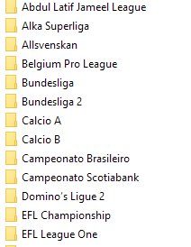
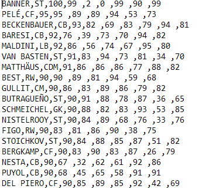
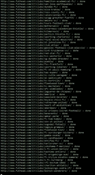

Hello my name is James Daly. I am an Irish student currently studying Computer Games Development in the University of limerick and this is my portfolio website. Here is where I showcase all of my projects both past and present that I have chosen to continue developement on. I am an aspiring young programmer with a strong interest in video games and artificial intelligence. If nothing else I hope that you find my portfolio interesting.
Pytron 3030
Use ← and → to move. ENTER to fire
Fut Scrapper
This is a Python3.x application for retrieving all the latest statistics on Fifa Ultimate team players. It uses the requests python library to connect to over 650 different pages and the beautifulsoup library to parse through all the HTML to provide the complete panel of clubs across more than 30 leagues. It has been multi-threaded to allow for maximum utilization of bandwidth. When run it will connect to the Futhead site and pull down all required information and create a directory of clubs and teams across all Fifa leagues. It is currently running off of Fifa 17.



Project Jump
An android game set in space where the player can jump, run and flip gravity to speed through a level.
[CONSTRUCTION]
Sprawl
A real time strategy game based around empire expansion on a hex based world.
[CONSTRUCTION]
Skills and Education
Languages
• Java
• Python3.x
• C#
• C++
• Javascript
• Typescript
• HTML5
• CSS
• SQL
Technologies
• Unity
• Angular
• Spring
• Github
• QT (using c++)
• Windows
Education
• University of Limerick Computer Games Development 2018